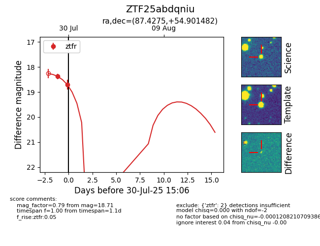

Target ZTF25abdqniu at 2025-07-30 15:06, see:
FINK: fink-portal.org/ZTF25abdqniu
Lasair: lasair-ztf.lsst.ac.uk/objects/ZTF25abdqniu
ALeRCE: alerce.online/object/ZTF25abdqniu
alt names
ZTF25abdqniu (ztf,fink)
coordinates:
equatorial (ra, dec) = (87.4275,+54.90148)
galactic (l, b) = (157.7166,+13.70375)
photometry
last ztfr=18.71
2 ztfr detections
